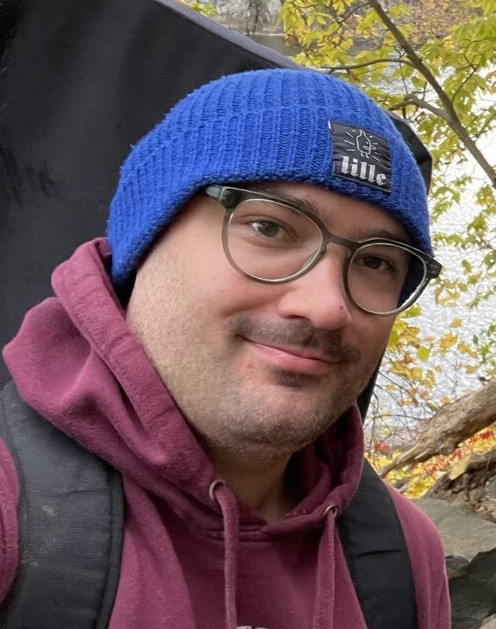

Henrik Matthiesen

About me
I am a mathematician and I used to work in Geometric Analysis.
More recently, I have been thinking about Generative AI, specifically Flow Matching and Diffusion Models.
My formal education consists of a PhD in mathematics which I obtained at MPIM Bonn supervised by Werner Ballmann with some time spent at MIT with Toby Colding.
After that I was an L.E. Dicksion Instructor at the University of Chicago with André Neves.
Contact
The best way to reach me is by email at henrikmatthiesen11 (at) gmail (dot) com.
Research
My work in Geometric Analysis is concerned with the Spectrum of the Laplace operator and Minimal Surfaces.
Among others, my research has been published in
Journal of Differential Geometry,
Compositio Mathematica,
Geometric and Functional Analysis,
Transactions of the AMS,
Calculus of Variations and PDE,
and Geometry and Topology.
My research on generative AI is still in its earlier days.
Right now it is focused on understanding and improving generative models based on insights from the regularity theory of differential equations.
I have some papers in preparation that will hopefully be available very soon, please feel free to reach out if you want to know more or have a chat about these topics!
Teaching
I was a TA and then an instructor from 2012-2022 at the University of Bonn and the University of Chicago for mathematics courses.
I taught classes in Real and Complex Analysis, Ordinary and Partial Differential Equations, Differential Geometry, and Algebraic Topology.